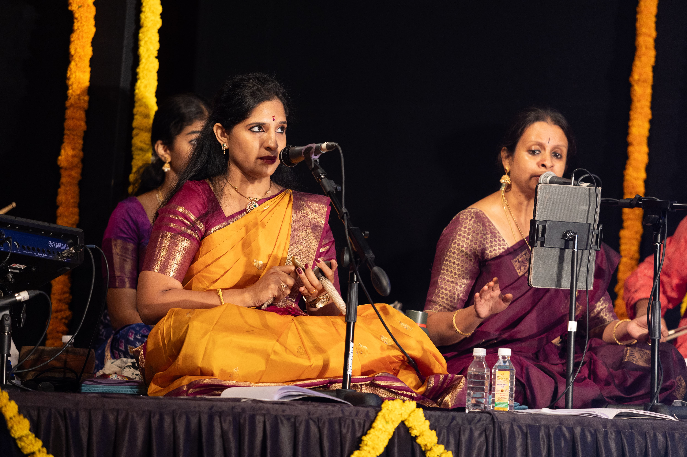
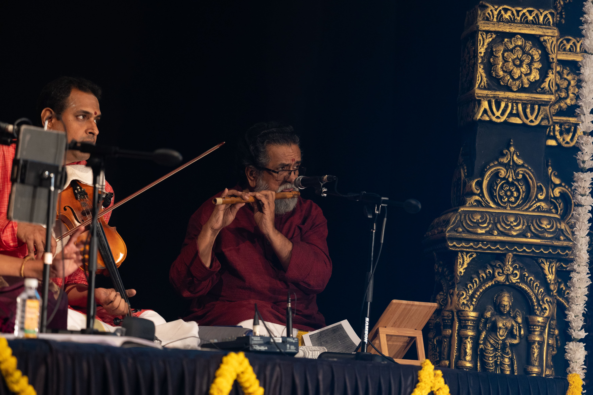

Expression Through Sound
Vachika Abhinaya
Vachika Abhinaya is the expressive power of speech, sound, and rhythm. It is the musical companion to the dancer's visual storytelling.
Vachika in Visual Form
Images from the musical side of Bharatanatyam: singers, instruments, and rhythmic expression.

The singer whose melody and mood guide the dancer.

The conductor who shapes rhythm and timing through gestures.

Melody, rhythm, and drone in harmony beneath movement.
What is Vachika Abhinaya?
Vachika Abhinaya expresses meaning through sound. It includes the song, spoken syllables, and the rhythmic accompaniment that support the dancer's performance.
Although the dancer may move in silence, the voice and percussion create a world of sound that gives the poetry context and enhances the emotional arc.
Key Features
- Choice of song and language
- Vocal expression and phrasing
- Rhythmic syllables and nattuvanar cues
- Tempo and mood correspondence
- Integration with the dancer's emotional arc
Why Vachika Matters
Vachika Abhinaya supports the story and helps the audience hear the inner world of the dance. It is the sound that makes the movement feel grounded and meaningful.